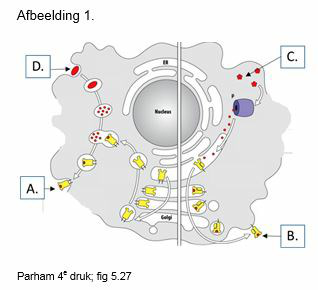
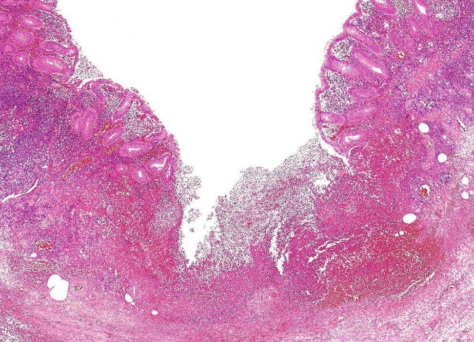
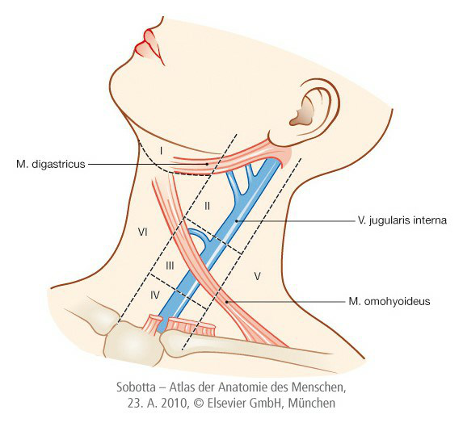
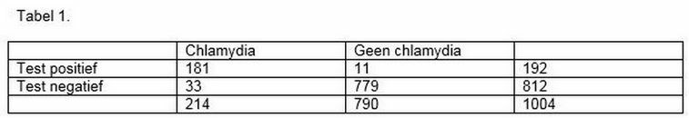
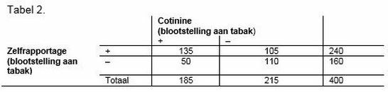

Vraag 1
Patiënten die de complement factor C6 missen, kunnen geen migratie van monocyten en neutrofielen naar de plaats van infectie stimuleren via complement componenten.
Vraag 2
Het membrane attack complex heeft als functie:
Vraag 3
Door slecht werkende toll like receptoren hebben patiënten geen goede afweer tegen micro-organismen doordat:
Vraag 4
Neutrofielen zijn belangrijk in de directe afweer tegen micro-organismen. De belangrijkste processen die hierbij betrokken zijn, zijn: (Drie goede antwoorden kiezen)
Meerdere antwoorden mogelijk.
Vraag 5
Kies de juiste alternatieven.
Patiënten die een verminderd vermogen hebben om somatische hypermutatie te ondergaan, zullen antilichamen met affiniteit hebben.
Vraag 6
Patiënten met een deficiëntie voor de RAG enzymen zijn niet in staat om:
Vraag 7
Wanneer een virus zodanig muteert, dat de reeds aanwezige antilichamen het virus niet meer herkennen, heeft dat de volgende gevolgen voor de geïnfecteerde persoon bij een nieuwe infectie.
Vraag 8
De afwezigheid van herkenning van zelf antigenen door onrijpe B cellen die aanwezig zijn in het beenmerg, zorgt voor:
Vraag 9
Wanneer naïeve B cellen er niet in slagen om regelmatig met FDCs in de secundaire lymfoïde organen in contact te komen, dan zullen deze B cellen:
Vraag 10
Tijdens een immuun respons verandert het isotype van antilichamen. Dit heeft tot gevolg dat:
Vraag 11

Zie afbeelding 1. Combineer A-D met de juiste antwoordmogelijkheid.
Sleep een optie naar de bijbehorende rij, of tik eerst op een kaart en dan op een rij.
A
Sleep hier naartoe
B
Sleep hier naartoe
C
Sleep hier naartoe
D
Sleep hier naartoe
Vraag 12
De positieve selectie van T cellen is belangrijk omdat dit bepaalt of eigen MHC moleculen herkend kunnen worden.
Vraag 13
Maak de zin kloppend. In de afwezigheid van het molecuul CD3 …
Vraag 14
Naïeve T cellen komen de lymfeklieren binnen na binding aan:
Vraag 15
Dendritische cellen hebben als functie:
Vraag 16
Kies de juiste alternatieven.
T cellen die niets in de thymus herkennen .
Vraag 17
B cellen kunnen met hun antigeen receptor direct aan antigenen binden.
Vraag 18
Na het verlaten van de thymus migreren T cellen op basis van hun homing receptors uitermate goed naar:
Vraag 19
Signalering via de TCR is essentieel voor T cel ontwikkeling en voor T cel activatie. Voor deze signaal transductie is/zijn de volgende molecul(en) nodig:
Vraag 20
Kies de juiste alternatieven.
Maak de zin kloppend. Effector T cellen worden geactiveerd door en zullen dan .
Vraag 21
Effector CD8+ T cellen die een peptide in MHC herkennen maar geen signaal via CD28 krijgen zullen
Vraag 22
Kies de juiste alternatieven.
Bij patiënten met een defect in het CD4 molecuul zal vooral de afweer tegen verstoord zijn.
Vraag 23
IgG subklasse deficiëntie kenmerkt zich door steeds terugkerende infecties in longen, bijholten en oren. Deze subklasse deficiëntie kan optreden wanneer … (twee antwoorden mogelijk)
Meerdere antwoorden mogelijk.
Vraag 24
Een patiënt met granulomas heeft in feite niet voldoende activiteit van: (twee antwoorden aangeven)
Meerdere antwoorden mogelijk.
Vraag 25
Bacteriële toxines kunnen onschadelijk gemaakt worden door toediening van neutraliserende antilichamen. Dit wordt in de kliniek als therapie ingezet.
Vraag 26
Welk van onderstaande verschijnselen van een acute ontstekingsreactie wordt het meest rechtstreeks verklaard door dilatatie van arteriolae?
Vraag 27
Intracellulair urinezuur, ATP en DNA kunnen een ontstekingsreactie in gang zetten, en wel door binding aan…
Vraag 28
Stasis van leukocyten in kleine bloedvaten in ontstoken weefsel is het gevolg van…
Vraag 29
Welke factor verklaart het verschil tussen de eiwitconcentraties in enerzijds exudaten en anderzijds transudaten?
Vraag 30
Binding van integrines van leukocyten aan integrine-liganden op geactiveerd endotheel veroorzaakt…
Vraag 31
Bij welke twee processen aan het begin van een ontstekingsreactie spelen adhesiemoleculen geen rol? NB: vul twee antwoorden in.
Meerdere antwoorden mogelijk.
Vraag 32
Welke bijwerking is te verwachten van medicijnen - zoals anti-TNF - die de rekrutering van leukocyten naar ontstoken weefsel remmen?
Vraag 33
Waar worden de zuurstofradicalen, geproduceerd door het NADPH-oxidase van fagocyten, gevormd? In het…
Vraag 34
NETose is een specifieke vorm van celdood die het verspreiden van pathogenen belemmert. Welk type leukocyt kan via NETose doodgaan?
Vraag 35
Steroïden remmen de vorming van…
Vraag 36
Welke van onderstaande groepen van arachidonzuurderivaten werkt ontstekingsremmend?
Vraag 37
In welke vorm van acute ontsteking is de weefseldestructie het ernstigst?
Vraag 38
Zie afbeelding 2. Welk type ontsteking ziet u op deze opname van een appendicitis acuta?

Vraag 39
Het syndroom van Chédiak-Higashi, veroorzaakt door een defect in het intracellulaire transport van lysosomen naar fagosomen, geeft ernstige functiestoornissen van…
Vraag 40
Chronische granulomateuze ziekte is een stoornis van de aangeboren afweer die veroorzaakt wordt door mutaties in genen die coderen voor componenten van…
Vraag 41
Welk type reactie is logischerwijs te verwachten bij dysfunctie van complement-regulerende eiwitten, zoals C1 INH?
Vraag 42
Hoe activeren allergenen mestcellen?
Vraag 43
Wat hebben myasthenia gravis en de hyperthyreoïdie van de ziekte van Graves met elkaar gemeen?
Vraag 44
Waardoor is depositie van immuuncomplexen zo'n sterke activator van een ontstekingsreactie?
Vraag 45
Welke van onderstaande ziekten veroorzaakt weefselschade als gevolg van een type IV hypersensitiviteitsreactie?
Vraag 46
Welk proces speelt een essentiële rol bij de inductie van centrale T-cel tolerantie?
Vraag 47
Acute cellulaire transplantaatrejectie wordt veroorzaakt door…
Vraag 48
Het hyper-IgM syndroom is het gevolg van mutaties in…
Vraag 49
Het DiGeorge syndroom is een immunodeficiëntie veroorzaakt door…
Vraag 50
Waardoor worden door het HIV-virus vrijwel alleen T-helpercellen en macrofagen geïnfecteerd? Beide celtypen…
Vraag 51
Wat zijn de belangrijkste parameters van het begin van de AIDS-fase van een HIV-infectie?
Vraag 52
AIDS gaat gepaard met een verhoogde kans op sommige 'opportunistische' infecties. Welke twee behoren daartoe? NB: er zijn twee goede antwoorden, die beide gekozen moeten worden.
Meerdere antwoorden mogelijk.
Vraag 53
Wat is de essentiële factor in de pathogenese van amyloïdose?
Vraag 54
Welke twee van onderstaande weefsels hebben geen of slechts een zeer beperkt vermogen tot regeneratie, na beschadiging?
Meerdere antwoorden mogelijk.
Vraag 55
Excessieve huid-littekenvorming, die zich uitbreidt buiten het oorspronkelijk beschadigde gebied en niet door re-modellering weer afneemt, wordt genoemd:
Vraag 56
De a. carotis externa heeft een aantal aftakkingen. Kies de twee juiste antwoorden.
Meerdere antwoorden mogelijk.
Vraag 57

Zie afbeelding 3. U ziet een afbeelding van de verschillende klinische halsregionen. In welke regio bevinden zich de volgende structuren? (kies I, II, III, IV, V of VI)
Schildklier
Glandula submandibularis
Larynx
Vraag 58
Zie tabel 1. Een 36-jarige man bezoekt de huisarts met klachten over een branderig gevoel bij het plassen. De huisarts schat de vooraf kans op chlamydia op 15%. Chlamydia wordt veroorzaakt door de bacterie Chlamydia trachomatis. De huisarts neemt materiaal af voor een test op chlamydia trachomatis en de uitslag is negatief. De sensitiviteit van de test is 88% en de specificiteit 98%. Bereken de achteraf kans op chlamydia trachomatis voor deze man, afgerond op een percentage zonder decimalen.

Vraag 59
Zie tabel 2. Cotinine is een bruikbare marker om blootstelling aan tabak vast te stellen via een analyse van de urine (gouden standaard). Zelf-rapportage van blootstelling aan tabak wordt verondersteld onbetrouwbaar te zijn, met name bij pubers. Wat is de sensitiviteit van zelfrapportage bij jongeren?

Vraag 60
Een huisarts doet een huisbezoek bij een vrouw van 78 jaar. Ze heeft sinds twee dagen een zeer pijnlijke dikke rode rechterknie. Ze kan er niet op staan door de pijn. Haar voorgeschiedenis vermeldt een auto-immuunziekte waarvoor ze immunosuppresiva gebruikt. Welke anamnestische vraag is nu het meest relevant om te bepalen of ze vandaag met spoed ingestuurd moet worden naar de eerste hulp?
Vraag 61
Een man van 61 jaar komt bij de huisarts. Hij heeft een jichtartritis van het MTP-1-gewricht rechts. Het is erg pijnlijk. Wat is nu de beste behandeling?
Vraag 62
Een vrouw van 31 jaar komt bij de huisarts. Ze heeft sinds 4 weken vergrote klieren in de hals. Welke anamnestische bevindingen maken een maligniteit het meest waarschijnlijk? Vink twee opties aan.
Meerdere antwoorden mogelijk.
Vraag 63
Een vrouw van 23 jaar komt bij de huisarts vanwege een vergrote lymfeklier rechts in de hals. Ze heeft deze klier sinds 6 weken. Ze is niet ziek geweest en heeft geen koorts gehad. Ze rookt sinds haar 15e een pakje sigaretten per dag. Bij onderzoek is de klier vast van consistentie en 2 cm groot. Palpatie is niet pijnlijk. Welke bevindingen wijzen het meest op een mogelijke maligniteit? Kies de twee juiste antwoorden.
Meerdere antwoorden mogelijk.
Vraag 64
Een 33-jarige vrouw presenteert zich op het spreekuur van de huisarts. Zij heeft al 10 jaren ernstig droog eczeem, met forse rood en duidelijke krabeffecten op haar handruggen. Het eczeem reageerde tot een jaar geleden goed op corticosteroïden zalf. Echter heeft zij sindsdien frequente recidieven gehad. Patiënt wil graag een preventieve behandeling. Welke van de onderstaande behandelmogelijkheden is de beste preventieve behandeling voor deze patiënt?
Vraag 65
U bent internist. Er komt bij u op de spoedeisende hulp een 62-jarige vrouw die zich presenteert met acuut ontstane roodheid en zwelling van het gezicht. Bij navraag vertelt de patiënt dat zij sinds die morgen amoxicilline gebruikt vanwege een pneumonie. Bij verder lichamelijk onderzoek valt het u op dat patiënt een dikke tong en keel heeft. U vermoedt dat er sprake is van een overgevoeligheidsreactie. Van welk type overgevoeligheidsreactie is hier sprake?
Vraag 66
De klier van Virchow:
Vraag 67
Een preauriculair reactief vergrote lymfklier vinden we vaak bij een: